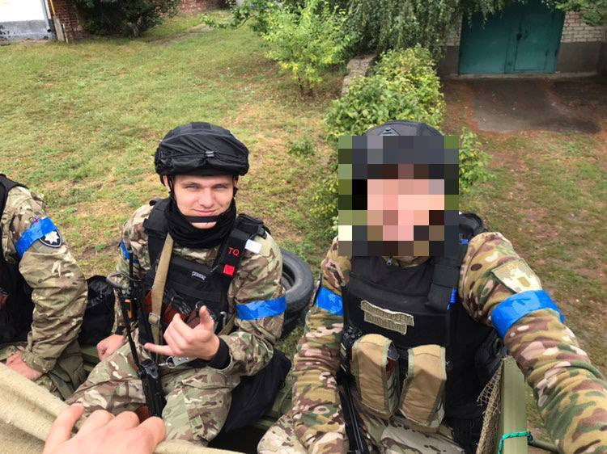
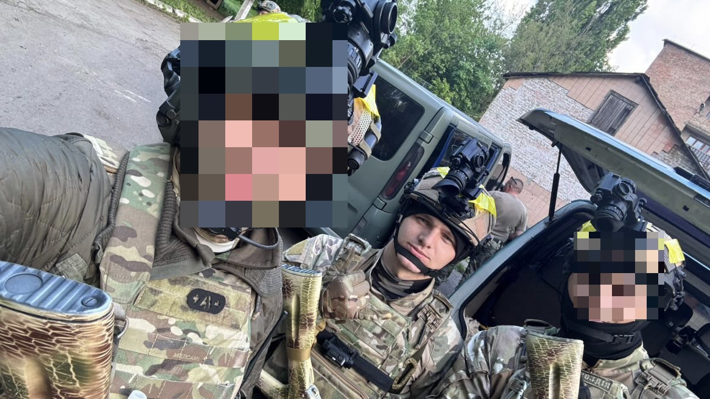
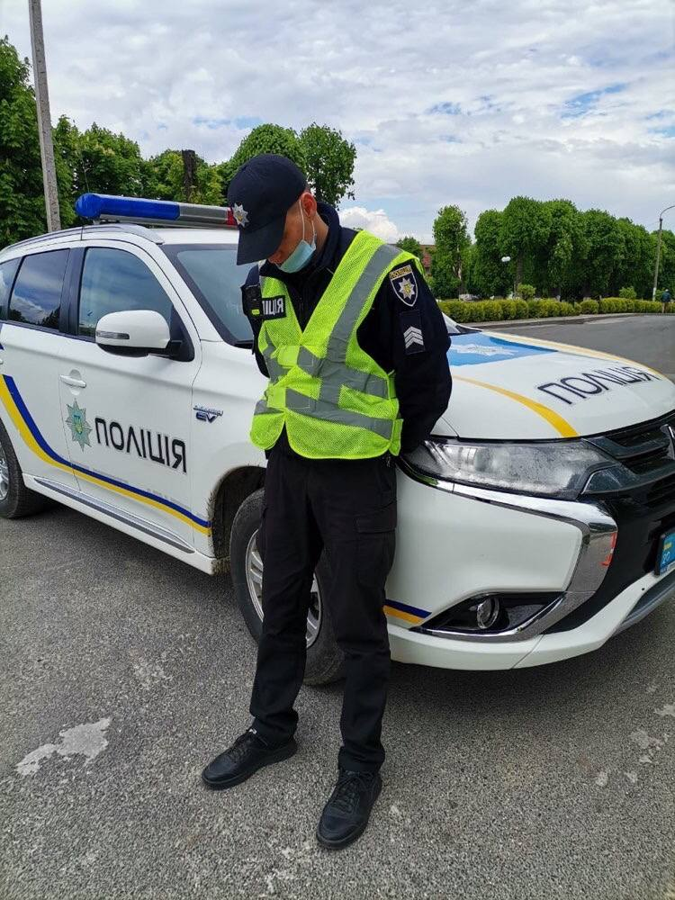
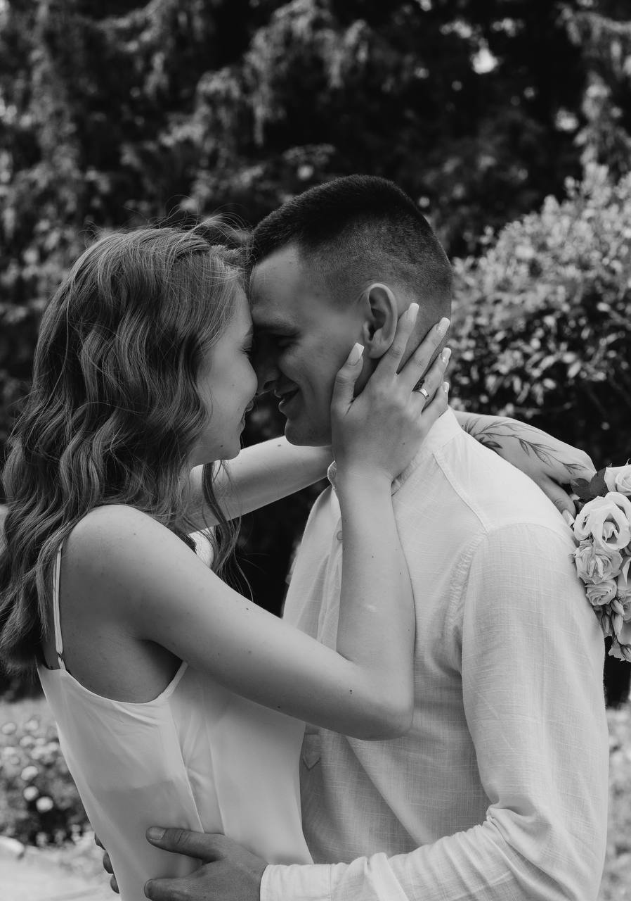
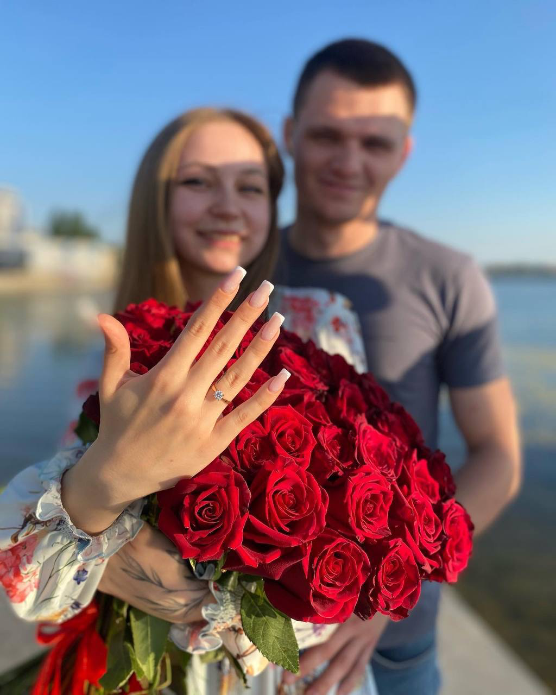
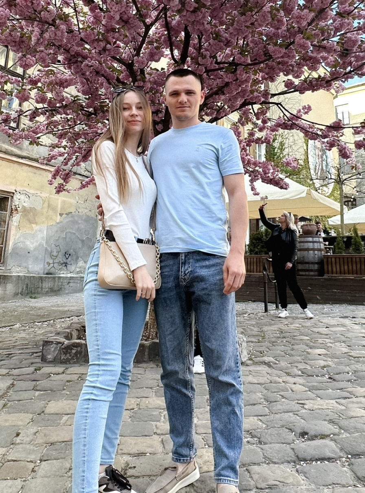
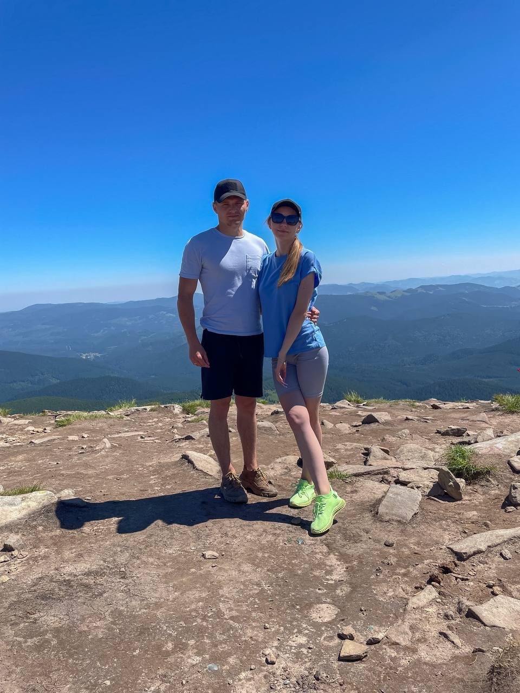
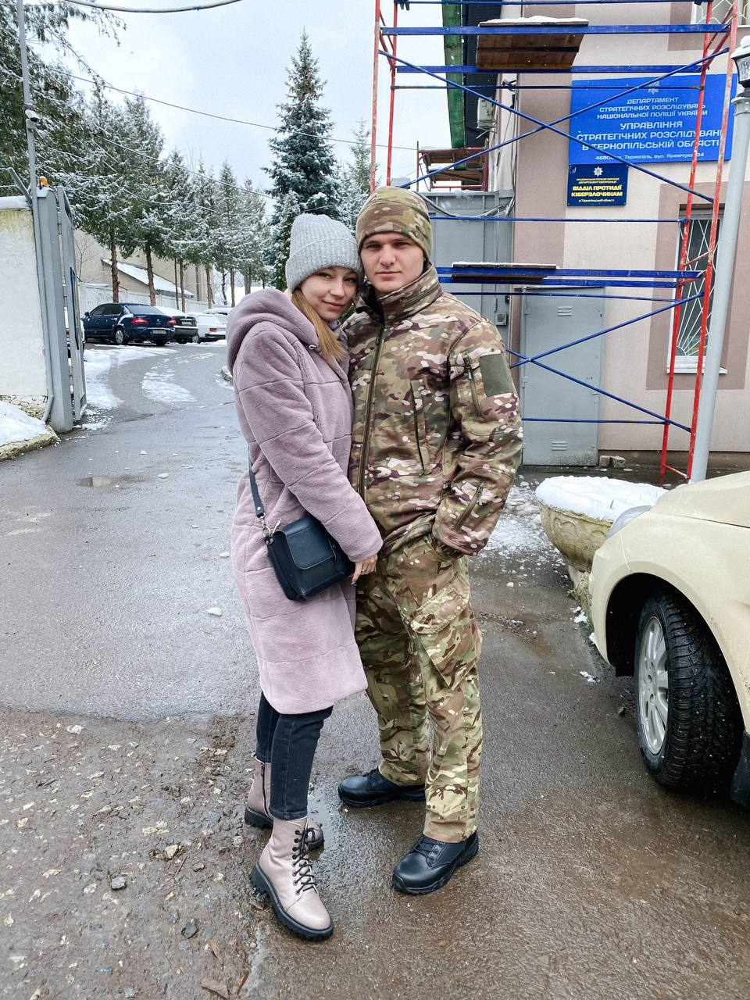
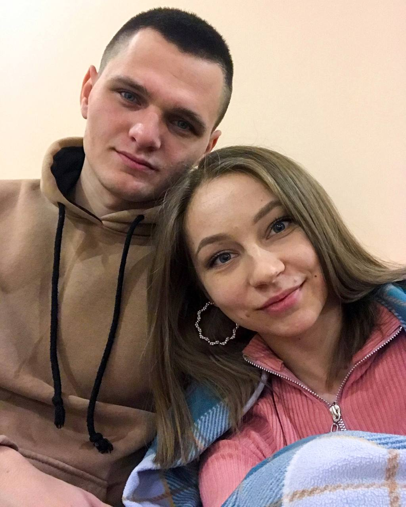

Життєвий шлях
Олег був людиною, яка завжди прагнула розвиватися, бути корисною та відповідальною за тих, хто поруч.
Він понад 5 років присвятив службі в Національній поліції України. Паралельно з роботою навчався в університеті, поєднуючи службу, навчання та особистий розвиток.
У 23 роки Олег створив сім'ю, ставши на шлях подружнього життя. Для нього родина завжди була найбільшою цінністю та джерелом сили.
Служба
Олег понад 5 років присвятив службі в Національній поліції України. Для нього це була не просто робота, а покликання — бути поруч із людьми, допомагати та захищати.
Паралельно зі службою Олег навчався в університеті, постійно розвивався та вдосконалював свої знання. Він умів поєднувати відповідальність, наполегливість та бажання ставати кращим.
Після початку повномасштабного вторгнення Олег продовжив свій шлях захисника України. З 2022 року він відстоював землі Харківщини, виконуючи бойові завдання та стоячи на захисті своєї країни.
У 2024 році Олег став бійцем Об'єднаної штурмової бригади Національної поліції України «Лють». Разом із побратимами він відбивав наступ ворога на Вовчанськ Харківської області та виконував бойові завдання на напрямку Торецька Донецької області.
Він виконував завдання із честю та відданістю, захищаючи свою країну і людей.
Навіть у найскладніші часи Олег залишався людиною, яка вміла знаходити позитивні моменти. Він підтримував тих, хто був поруч, дарував посмішку, зберігав силу духу та віру у краще.
Моменти служби



Відео
Сімейні моменти





